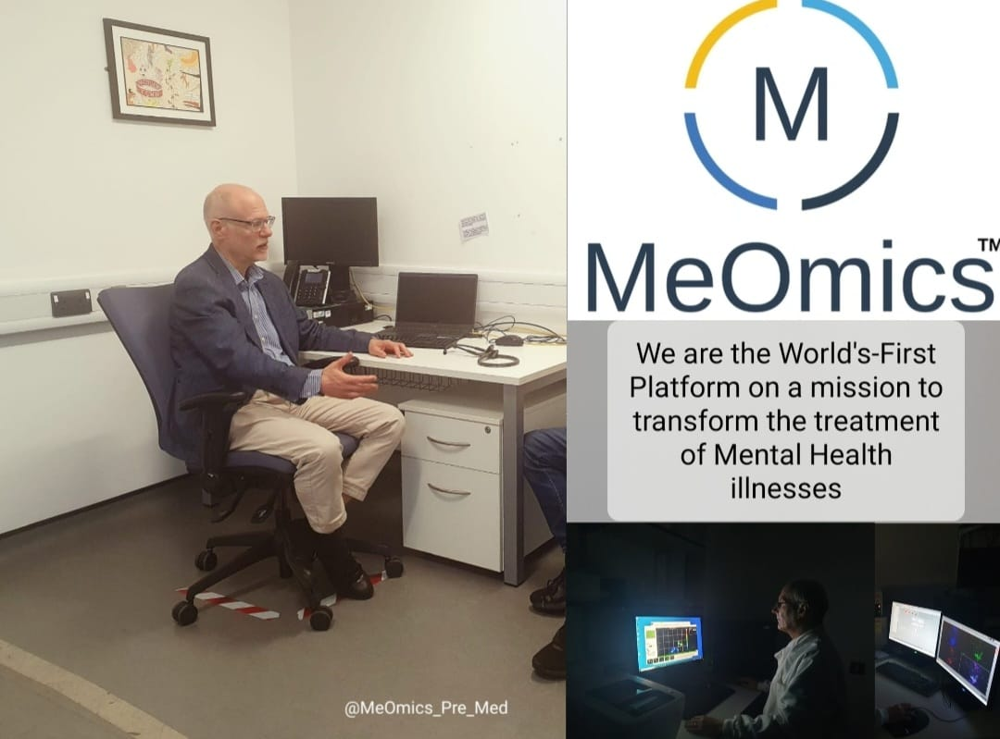
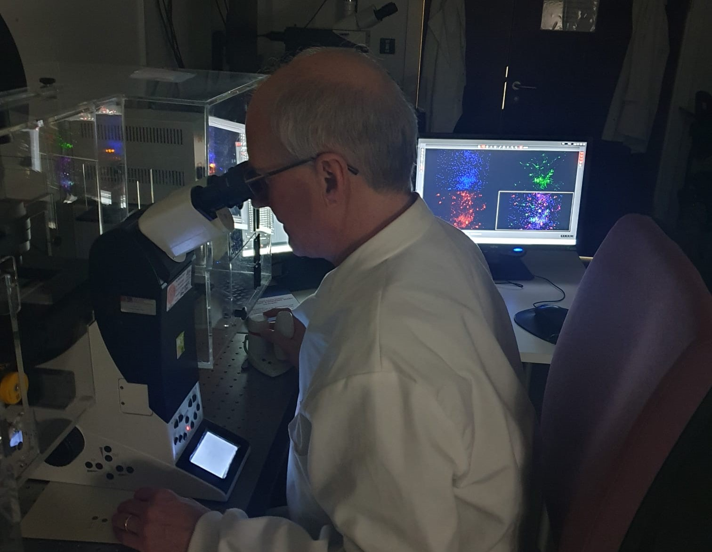

MeOmics will capitalise upon the academic research undertaken by the founders at Cardiff University to create an innovative Precision Psychiatry Platform for improved drug discovery and prediction of optimal drug therapies for individual mental health patients..
MeOmics has a unique physiological assay, drawn from significant experience in psychiatric genomics and stem cell biology, that can measure a direct biological read-out of multiple interacting neurons derived from clinically and genetically characterised patient stem-cell lines (see figure right). In effect, this simulates key aspects of brain function from the patient’s own cells. Importantly, it can potentially determine efficacy with high specificity of existing drugs to provide a precise, measurable, contextually appropriate, repeatable test.


MeOmics will integrate large volumes of complex multimodal data to link the patient’s cell electrophysiological profile to multiple clinical parameters and genetic differences. Together these methodologies will create a tool to predict the optimal drug therapy based upon the cell responses in combination with the patient genotype and clinical data.
Currently no such platform exists, and clinicians rely on direct patient clinical assessment and professional judgement to determine therapeutic strategy. MeOmics will work with mental healthcare providers to scale-up the prototype of our data-biology tool on patient populations with the objective of demonstrating a capacity to handle more than 500 patient lines and to confirm its ability to predict differences in patient treatment responses, with an initial focus on psychotic illnesses. This will represent a significant up-scaling from current state-of-the-art and aligns with the commercial need to create a high content product. These data will be analysed by bespoke computational tools to stratify patients based on cell response, genotype and clinical data to improve predictive power. By combining these data sources, the platform will bring personalised medicine to psychiatry.
Beyond the creation of the primary product, validation of our platform will additionally open up the potential for its use as a preclinical screen for new drug candidates as well as existing treatments. This will give access to an additional market for drug discovery and development with big pharmaceutical companies. In summary, MeOmics' immediate objective is to scale-up their existing prototype of the Precision Psychiatry Platform, an innovative new service product to improve patient treatment for mental illnesses. The research and development performed will create brand-new diagnostic and pre-clinical screening service products for the mental healthcare market.

MeOmics immediate plan is that patients will be identified by a Research Fellow located at a suitable healthcare provider's patient facility. Working in collaboration with MeOmics, they will carry out a detailed clinical assessment of the patients and forward the clinical information and blood samples, which will be provided to MeOmics for reprogramming into induced Pluripotent Stem Cells (iPSCs).
Once reprogrammed, patient cells will be genotyped (Illumina Global Screening Array v3.0) for quality control. Patient iPSC will be differentiated to neurons for electrophysiological and neuronal network analysis using a Multi-Electrode Array (MEA) assay, previously established in our laboratory (see Supporting Publications).
MeOmics have currently tested around 50 patients in our laboratory. As we scale-up, we will expand the MEA assay capacity to create a high capacity, high throughput MEA workflow based on an established 96-well plate protocol (Biocircuit MEA 96, Axion) integrated via robotics into a unique automated MEA system. This will create an expandable system capable of testing multiple drugs, doses and combinations in parallel for 100s of patients (see figure below). Genomic, phenotype and MEA data will be utilised to establish multiparametric markers of patient sub-groups linked to drug responsiveness providing testable hypotheses for the mental healthcare provider.The process will be reiterated initially for up to 200 patients to refine the assay process and data analytics before progressing to hundreds of patients.
Patient neuronal cells are cultured in multi-well plates for electrical recording: (A) Large scale, 96-well based MEA assay, showing minimal variation of Synchronized Burst (SB) frequency (SB -1 Large-scale 96-well assay shows that using data based on measures of min) across recordings from 90-wells. (B) Drug-dose response relationship of SB frequency for synchronized bursting (SB min-1) is a robust measure of synaptic a GABA antagonist. Changes in SB frequency correlate well with the known drug IC50 value.

Peer-Reviewed Published Scientific Papers
L-type voltage-gated calcium channel regulation of in vitro human cortical neuronal networks
https://www.nature.com/articles/s41598-019-50226-9Pharmacological intervention to restore connectivity deficits of neuronal networks derived from ASD
https://molecularautism.biomedcentral.com/articles/10.1186/s13229-020-00391-wUsing induced pluripotent stem cells to investigate human neuronal phenotypes in 1q21.1 deletion and
https://www.biorxiv.org/content/10.1101/2021.02.08.430246v1?rss=1Copy number variants (CNVs): a powerful tool for iPSC-based modelling of ASD
https://molecularautism.biomedcentral.com/articles/10.1186/s13229-020-00343-4